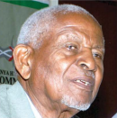

Cabinet Secretary James W. Macharia heads the Ministry of Transport and Infrastructure. He joined Kagumo in 1977 for his A-levels and resided in Kimathi House.
He is most proud of Kagumo because it trained him to become an independent person. Discipline and the wide scope of Kagumo old boys do provide a rich platform for networking.
As a way of giving back to the school, Mr. Macharia in his own capacity has contributed towards the project of renovating Wilberforce and Washington Houses.
CS. JAMES W. MACHARIA
He is the Managing Director of Manpower Services Group.Mr. Muhindi’s company has been in recruitment, training and consultancy.
The company has since expanded into Uganda and Tanzania.Mr. Muhindi was in Kagumo from 1965 and left in 1970 as the school captain.
He scored a Division one of 15 points at O- level and later three A’s and a B at A- level.One of his major achievements during his
high school days, he reveals, is that he was one of the pioneer founders of the Wildlife Clubs of Kenya.

MR. FRANCIS MUHINDI
Doctor Gideon Muriuki, MBS, joined the school in 1978 from Kiganjo Primary School. He resided in Kraph House.
He is the Group Managing Director and CEO of the Co-operative Bank of Kenya Group.The Bank has a Foundation supporting over 1,500 bright
and needy students who receive quality education at Secondary and University levels. A good number of these beneficiaries are in Kagumo.
DR. GIDEON MURIUKI
Dr. Dan Gikonyo, a Cardiologist scored an unprecedented six points (today's equivalent of straight As in all subjects)
in his O- level exam becoming the best student in the country.He is the lead cardiologist at Karen Hospital a facility
he started together with his wife Betty in 2006- a paediatric cardiologist herself and the hospital’s CEO.Dr. Gikonyo was in Kagumo from 1964-1969,
admission no 2303. He was Washington house captain as well as the Christian Union chairman in 1968.
DR. DAN GIKONYO
PROFESSOR Godfrey Muriuki got admitted to Kagumo in 1953 and his admission number was 1655.
He was a resident at Wilberforce House.He was a 440 yards runner and the hockey captain.
He made history in Kagumo for having been appointed as the Wilberforce dormitory prefect in 1954
while in Form two, which was not the culture. He later became the school captain in 1958.
He is also one of the founders of Dedan Kimathi University alongside other top Kenyans including
former President Mwai Kibaki. He is also a special student advisor at the University of Nairobi.
PROFFESSOR GODFREY MURIUKI
Mr. Gitu Kahengeri was in Kagumo between 1940-1942 when the school was located at Gatitu.
He resided in Dormitory number two. From there he enrolled at Lioki Mission in Kiambu County
here he completed his studies.In 1945 he became a telephone operator at the post office and
served at the Ruiru station before moving to Makuyu.In 1947 he joined the Mau Mau as a strategist.

MR. GITU KAHENGERI